G4TCH’s ARCADE
50 years. Still playing.
A miniature arcade cabinet for my dad’s 50th birthday: the Mega Drive games he loves, a screen full of sci-fi personality, and a machine made especially for him.
Try the browser preview ↓ See the hardware build ↓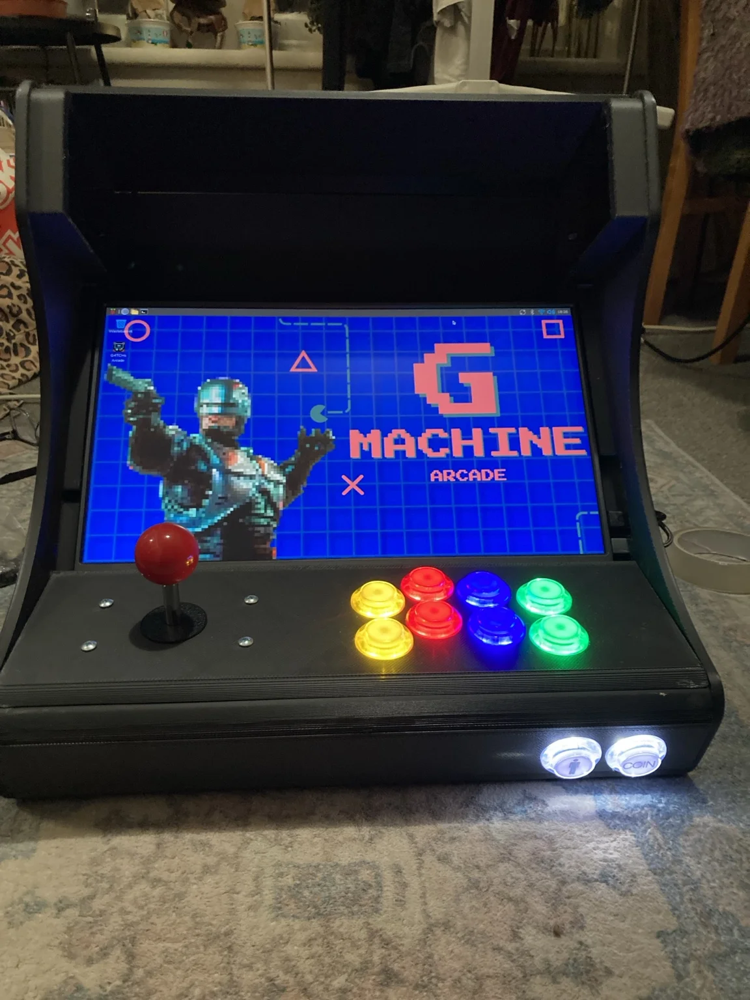
A birthday present with its own identity
The project started with a simple idea: build my dad a small arcade cabinet for his 50th birthday in December. His favourite games include Golden Axe, Double Dragon, Street Fighter and Ghouls ’n Ghosts. I wanted a dedicated machine that feels inviting to turn on, browse and play.
“G4TCH’s ARCADE” gives the build his own name and identity. The desktop-sized cabinet now houses the Raspberry Pi, screen and controls inside its custom printed case.
The software has moved beyond the initial idea. The launcher started as a desktop prototype and now runs on the Raspberry Pi. Golden Axe was one of the early tests; this screenshot shows its cover art alongside the matching search result.
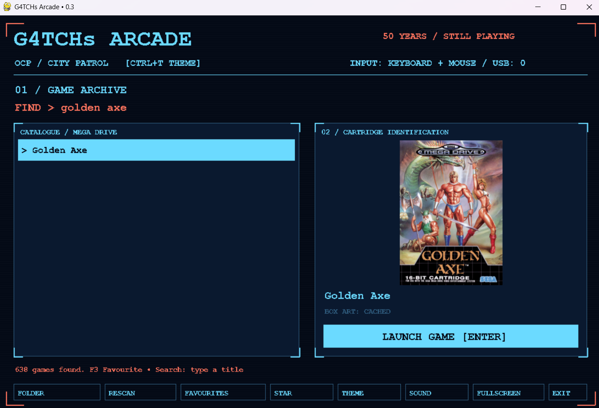
Assembled and nearly complete
The Raspberry Pi, screen and wired controls are now fitted inside the 3D-printed cabinet. Morgan Spears modified and reprinted the side plates to make room for the wiring and the screen’s power supply. That extra clearance brought the enclosure and working hardware together.
I wired the joystick and ten buttons through the USB encoder controls kit ↗. The eight coloured action buttons sit on top, with COIN and Player on the front. The launcher’s Controls (F4) menu lets me remap the inputs.
Morgan also printed a Lewis & Spear Productions logo plate for our collaboration. His remaining finishing work is to print the decals and lettering for the cabinet itself.
Screen, Pi, controls and wiring fitted inside the printed case.
Custom RoboCop background, menu music and film sound effects.
Morgan’s cabinet decals and lettering are still to come.
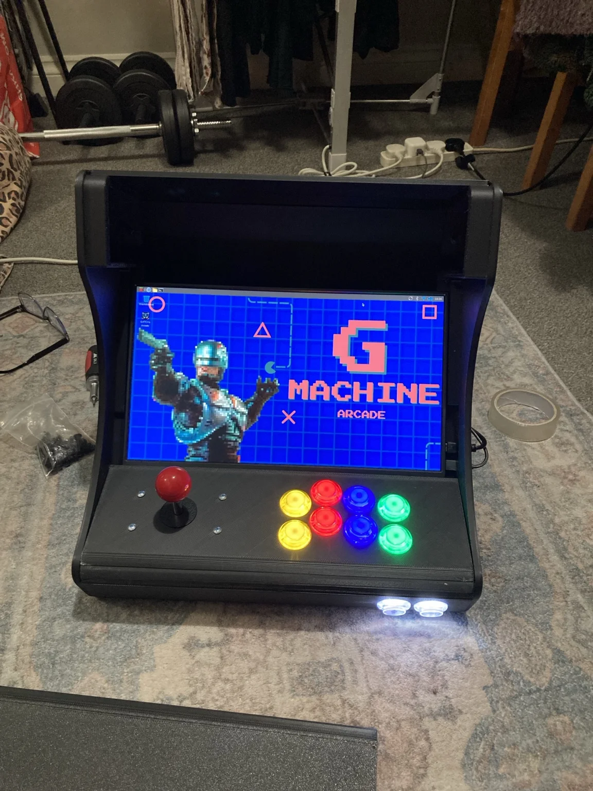
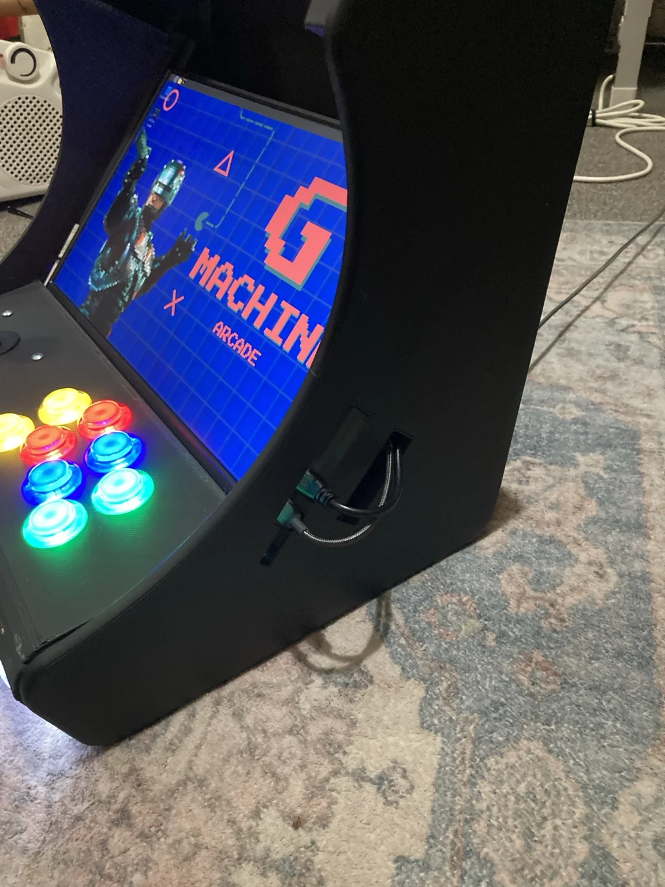
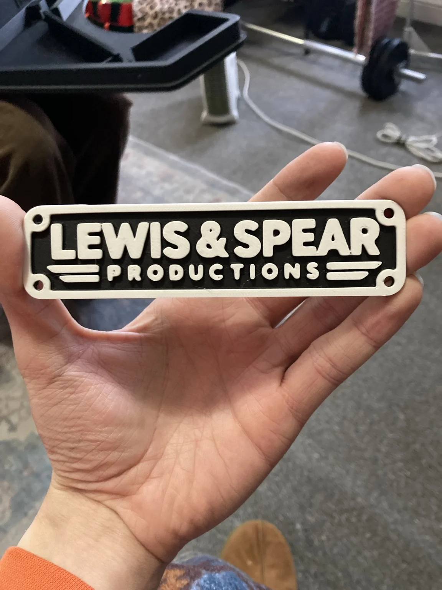
Earlier build stages
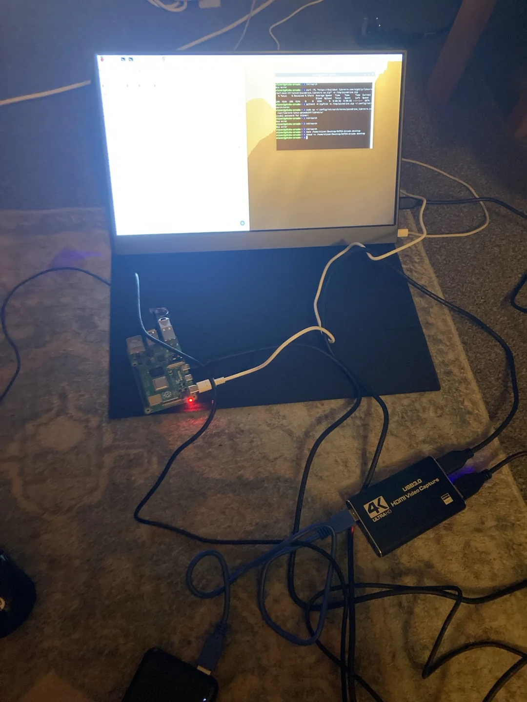
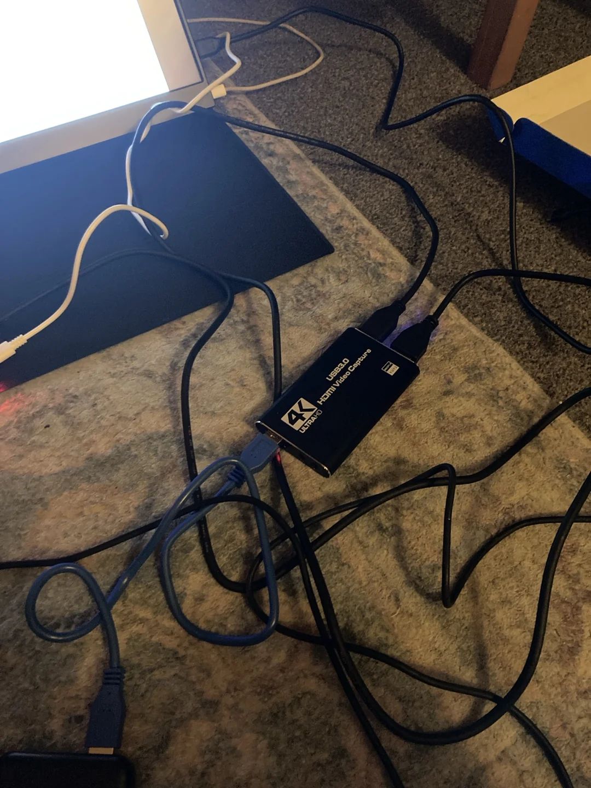
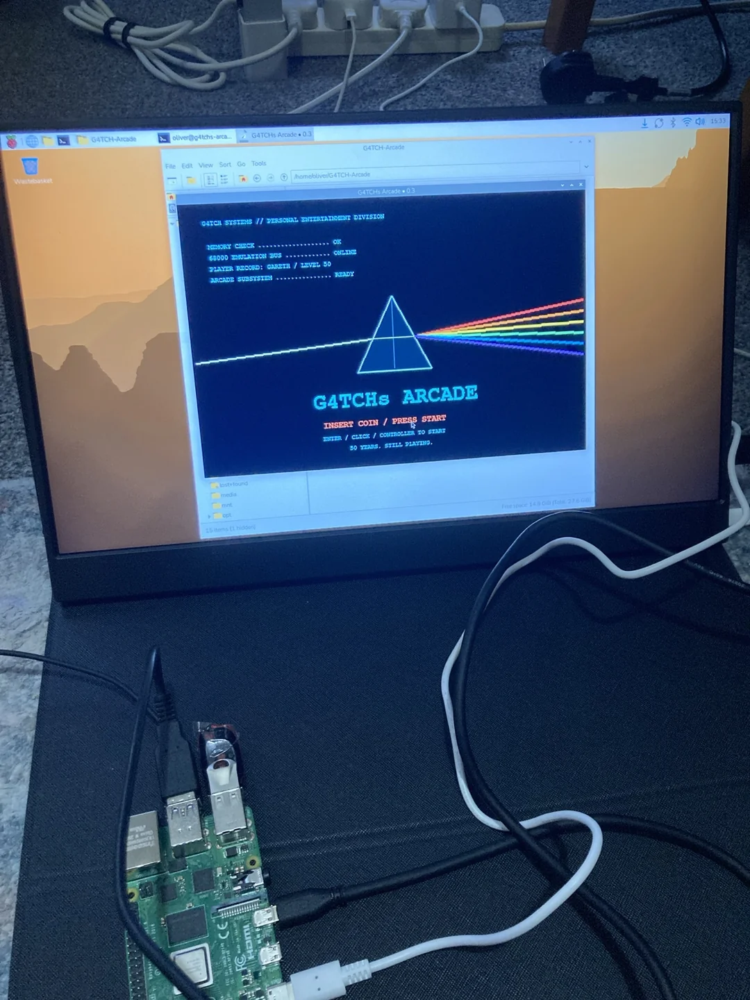
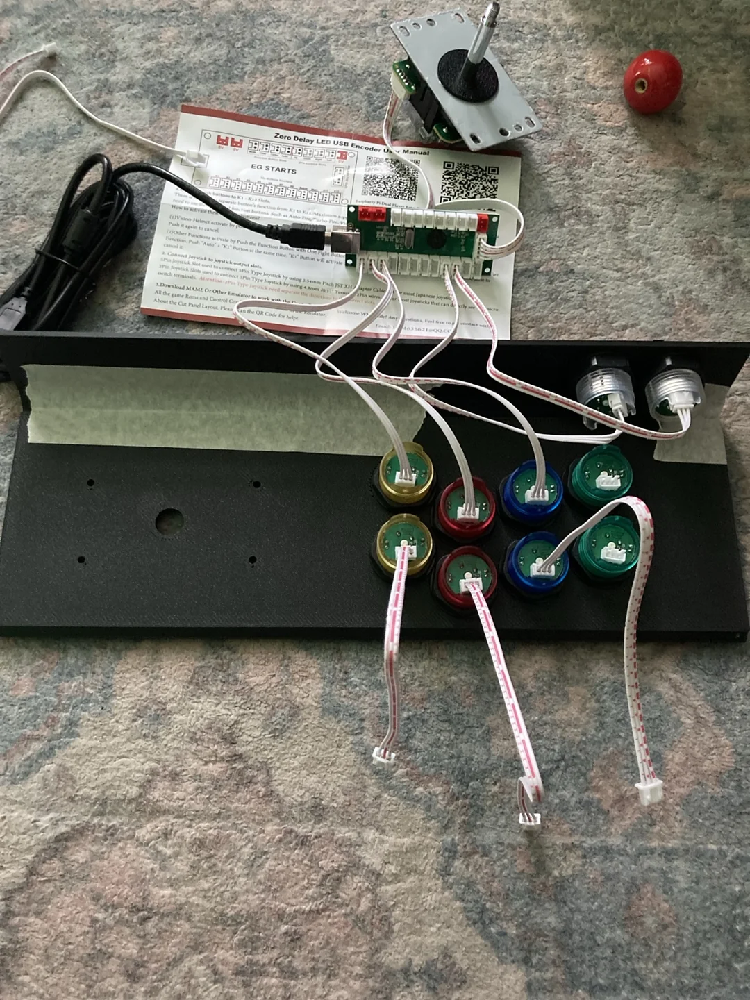
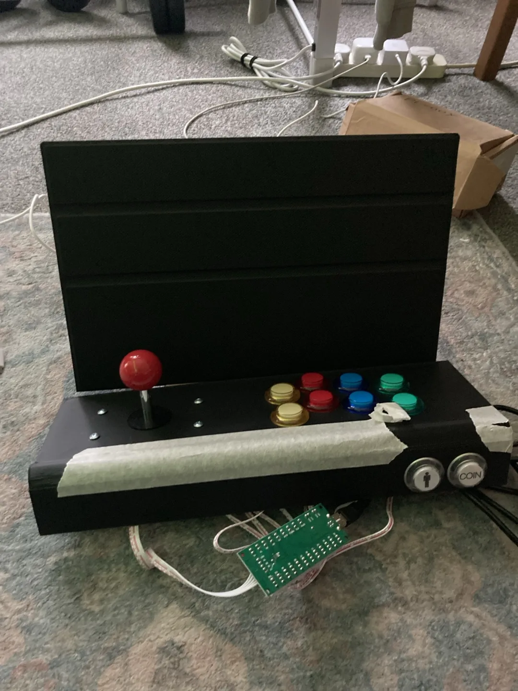
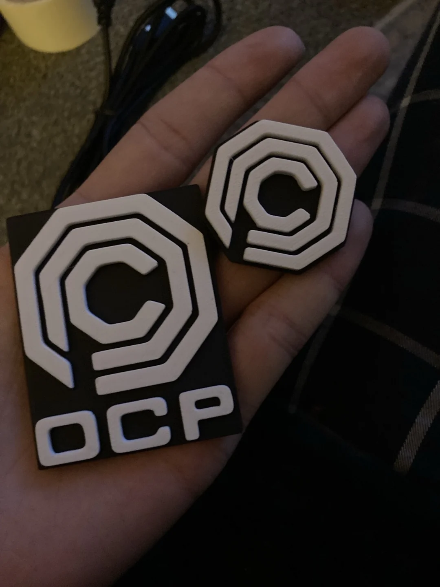
Two ways to enter the game archive
The interface borrows its atmosphere from two of my dad’s favourite sci-fi worlds. The green theme leans towards the computer terminals of Alien: dark screens, restrained lines and readable text. The blue theme takes its cues from RoboCop’s HUD, with a sharper patrol-system feel.
Both themes keep the same practical layout: a search field, the catalogue on the left, and a cartridge panel on the right. Cover art is a useful extra when it is available; the screenshot of the unfiltered catalogue shows the fallback panel for a game without an image. The library should remain usable in either case.
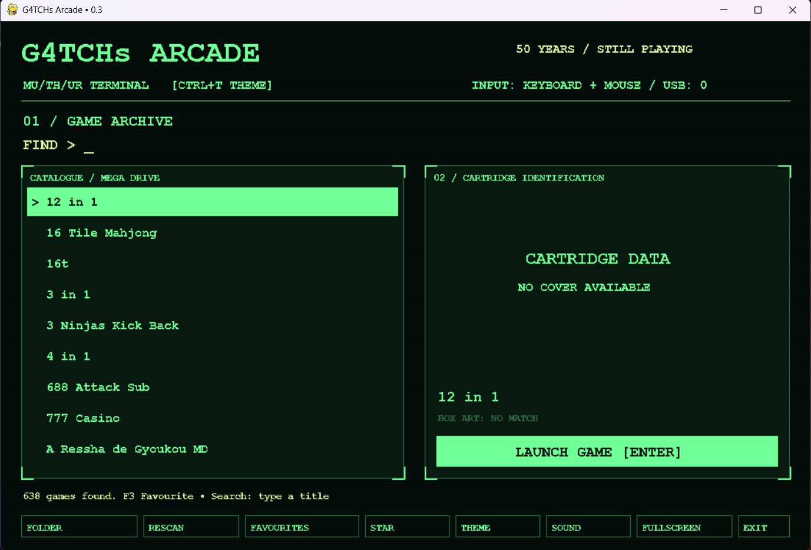
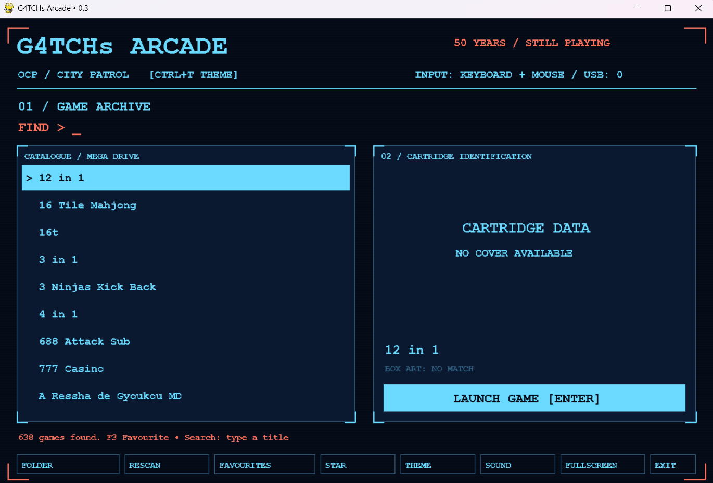
A cabinet with its own soundtrack
I made a custom RoboCop background to make the machine feel more personal. The menu now plays 8-bit arcade-sounding versions of Pink Floyd and Aphex Twin, bringing some of my own music choices into the build.
The film sound effects add another layer of character. The “would you like to play a game” clip from WarGames is part of the custom audio, and selecting Alien games gets the “game over, man” clip. Those small touches help tie the software to the cabinet’s sci-fi identity.
With the case assembled and the software personalised, the remaining aesthetic step is Morgan’s printed decals and lettering.
A Pygame front end, with RetroArch behind it
The menu and the emulator have separate jobs. Pygame draws the launcher on a 1100 × 720 canvas, scaled to fit its window. It searches the game folder, presents the catalogue and hands the selected cartridge to RetroArch, running the Genesis Plus GX core. When the game closes, the launcher returns.
The scanner looks through subfolders and groups filename variants into one entry per title, using region, revision and dump tags to choose between copies. Favourites and the selected library folder are saved, along with the theme and sound preference. It makes a large collection much easier to browse without changing the original files.
Use the search box, mouse, keyboard or a connected controller. Star favourites for a shorter list. The menu also detects controllers connected after startup.
Ctrl+O chooses a folder; Ctrl+R rescans; Ctrl+D stars the selected game. Tab switches favourites and Alt+Enter toggles fullscreen. These are the native desktop shortcuts.
Escape leaves a running game and returns to the launcher. The backtick key opens RetroArch’s quick menu. The cabinet inputs can be reassigned from the launcher’s Controls menu.
Try the cabinet
Press Start, switch between the green and blue themes, and launch Prism Break , a small original paddle game included for testing the controls.
Use ← → or A / D to move, Space to launch and P to pause. On a phone, drag the paddle or use the buttons. A supported connected controller can also operate the preview.
For Mega Drive playback, choose Add ROMs and select an individual game file: .bin, .md, .gen, .smd or a single-game .zip. The first launch downloads the browser emulator; the cartridge stays in your browser.
The web preview now remembers your theme and favourite titles on this device. Intro sound is optional: turn it on at the prism screen, or use Replay intro. Added ROM files need to be selected again after reloading the page.
This is a browser adaptation of the cabinet concept. The screenshots above show the separate native Pygame prototype. Original game ROMs are not bundled with this page.
Open a larger preview ↗Mega Drive memories, organised as a library
For my local collection I used the TOSEC Sega Megadrive and Genesis collection on the Internet Archive ↗ . The front end makes it possible to search that collection rather than work through a long list of filenames every time.
The collection, the interface and the emulation layer each have a different job. The screenshots document my native game library; the small web version uses EmulatorJS for user-selected Mega Drive cartridges and includes its own original test game so visitors can try the cabinet immediately.